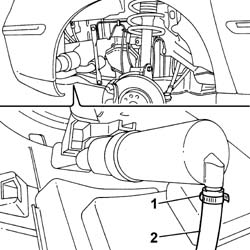
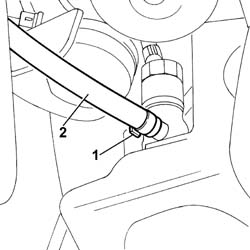
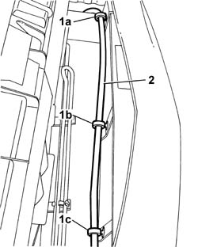

5050D13 HEADLAMP WASHER SYSTEM TYPES AND FITTINGS - R R
- Path
- Procedures > 50 AUXILIARY UNITS > 5050 SCREEN WASHERS AND HEADLAMP WASH/WIPE > 5050D HEADLAMP WASH/WIPE > 5050D13 HEADLAMP WASHER SYSTEM TYPES AND FITTINGS - R R
- Kind
- repair procedure (removal / refitting; the operation number is the code)
- Applies to
- all engines; all production periods
- Interactive page
- https://sloeber94.github.io/elrnDB-fUlss/en/#/179007513
Applies to: all engines; all production periods
 Removing
Removing
 Refitting
Refitting- Position the vehicle on a lift.
Op. 7055A42 FRONT GRILLE - R+R
Op. 4450B12 FRONT OR REAR WHEELS (TWO) - R+R
Op. 7055B91 RIGHT FRONT WHEEL ARCH LINER - R.R.
Op. 7055B90 LEFT FRONT WHEEL ARCH LINER - R.R.
1. Remove the retaining bands.
2. Disconnect the pipes from the headlamp washer pump.

Applies to: all engines; all production periods
1. Remove the retaining band.
2. Disconnect the supply pipe to the headlamp washer jets.

Applies to: all engines; all production periods
1. Open the bands (1a), (1b) and (1c).
2. Remove the pipe and connectors for the headlamp washer system.

Applies to: all engines; all production periods
Refitting
Removing- Position the headlamp washer system pipe and connectors and secure them using special bands.
- Connect the pipe to the headlamp washer pump and secure it using a suitable band.
- Connect the pipes to the headlamp washer jets and secure them using special bands.
Op. 7055B90 LEFT FRONT WHEEL ARCH LINER - R.R.
Op. 7055B91 RIGHT FRONT WHEEL ARCH LINER - R.R.
Op. 4450B12 FRONT OR REAR WHEELS (TWO) - R+R
Op. 7055A42 FRONT GRILLE - R+R
- Remove the vehicle from the lift.
- Top up the screen washer fluid level.